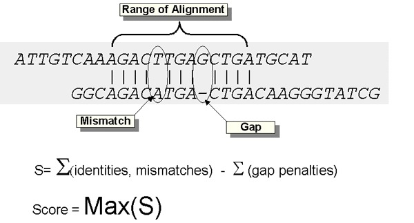
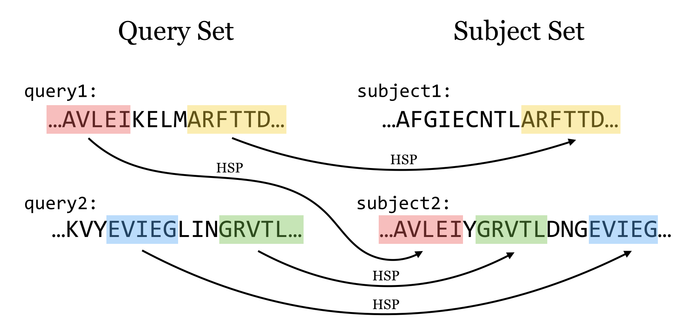
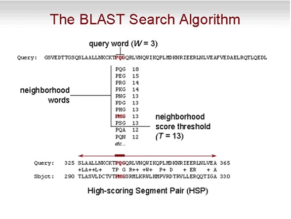
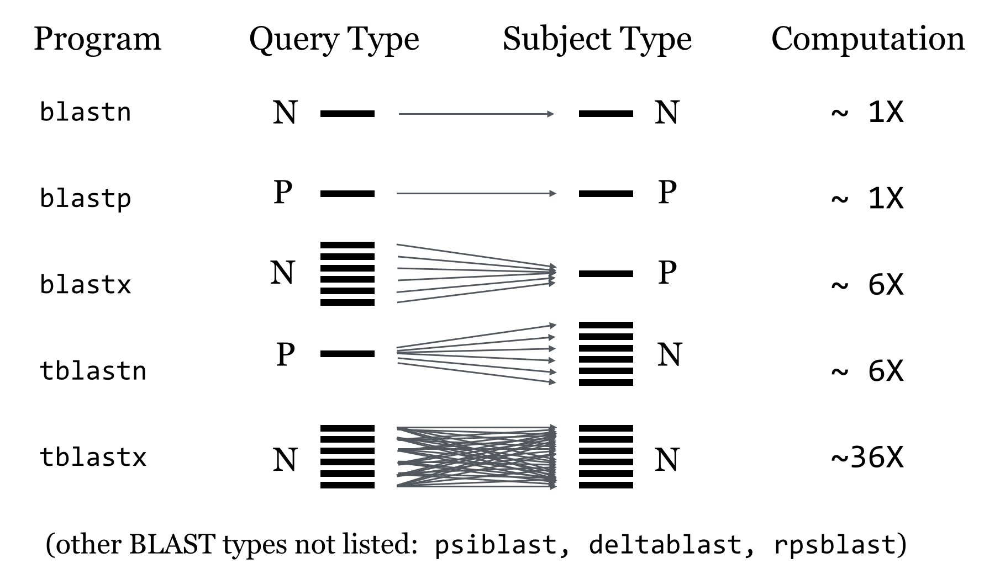

Herramientas de NCBI: Búsqueda de secuencias & BLAST#
El NCBI es una de las colecciones de bases de datos biológicas más importantes: contiene secuencias de DNA, proteínas, datos taxonómicos, publicaciones, etc. En esta sesión aprenderemos a accederla tanto de forma gráfica como vía script, y a buscar secuencias similares usando BLAST.. Vamos a explorarla primero en modo “click” y luego con un script
1. Búsqueda de secuencias por explorador#
Entre a https://www.ncbi.nlm.nih.gov/ y despliegue la pestaña “All Databases”. Escoja la base de datos “Protein” y escriba en la barra:
Cytochrome B Homo sapiens neanderthalensis
Escoja la proteína de referencia (RefSeq) y dé click en el ID YP_002124314.2 para revisar la información disponible.
2. Descarga de una sola secuencia desde Python#
Podemos automatizar la descarga usando Biopython y el módulo Entrez, que es la interfaz programática del NCBI.
⚠️ Siempre se debe registrar un email válido: el NCBI lo usa para contactar al usuario si el servidor detecta un uso excesivo de la API.
source activate biopython
#!/usr/local/bin/
# Script por Laura Salazar Jaramillo
# Busca la secuencia de proteinas del citocromo B de neanderthales
from Bio import Entrez
from Bio import SeqIO
Entrez.email = "lsalazarj@eafit.edu.co"
with Entrez.efetch(
db="protein", rettype="fasta", retmode="text", id="YP_002124314.2") as handle:
seq_record = SeqIO.read(handle, "fasta")
print(seq_record)
SeqIO.write(seq_record, "hsneanderthal_cytb_prot.fa", "fasta")
Para descargar esta secuencia debíamos saber qué estábamos buscando. Otra forma de realizar búsquedas es por similitud: dada una secuencia que tenemos, ¿a qué otras secuencias se parece?
Pero antes de pasar a BLAST, veamos cómo escalar la descarga por ID a múltiples secuencias de un proyecto real.
3. Descarga de múltiples secuencias con script de python#
En investigación es común tener una lista de accesiones de referencia que queremos descargar en bloque para construir nuestra propia base de datos local. El siguiente script descarga secuencias de bacterias ácido-lácticas (LABs), y las fusiona en un solo archivo FASTA.
Este es exactamente el mismo patrón que la celda anterior, pero aplicado a múltiples secuencias en un loop con manejo de errores.
from Bio import Entrez
from Bio import SeqIO
Entrez.email = "lsalazarj@eafit.edu.co"
ref_IDs = [
"JQ389890.1", "MT457691.1", "PV611851.1", "MT925613.1", "LT631741.1",
"PV951584.1", "JQ389890.1", "PV173327.1", "PV173326.1", "PV173324.1",
"PV173325.1", "MT925613.1", "LC062898.1", "HG799970.1", "OP848250.1",
"MK045775.1", "PV951584.1"
]
# Lista para guardar las secuencias de referencia
ref_seqs = []
# Ruta del archivo final fusionado
output = "lab_ref.fasta"
# Descargar y almacenar cada secuencia
for idx, refid in enumerate(ref_IDs, start=1):
try:
with Entrez.efetch(db="nucleotide", rettype="fasta", retmode="text", id=refid) as handle:
seq_record = SeqIO.read(handle, "fasta")
ref_seqs.append(seq_record)
print(f"Referencia {idx} guardada exitosamente: ID {seq_record.id}, longitud {len(seq_record.seq)} pb")
except Exception as e:
print(f"Error al descargar secuencia {idx} (ID {refid}): {e}")
# Escribir todas las secuencias en un solo archivo FASTA
try:
SeqIO.write(ref_seqs, output, "fasta")
print(f"\nTodas las secuencias fueron fusionadas en: {output}")
except Exception as e:
print(f"Error al escribir las secuencias: {e}")
🔍 ¿Qué hace este script paso a paso?#
Paso |
Qué hace |
|---|---|
|
Contacta la API del NCBI y descarga la secuencia con ese accession number |
|
Parsea la respuesta y la convierte en un objeto |
|
Acumula todas las secuencias en una lista |
|
Escribe todas las secuencias en un único archivo FASTA |
|
Captura errores por ID inválido o problemas de red sin detener el script |
4. Búsqueda por similitud molecular#
Ahora que tenemos nuestras secuencias de referencia descargadas, el siguiente paso natural es preguntar: ¿a qué otras secuencias se parecen?
La búsqueda de similitudes es un primer paso para encontrar información sobre funcionalidad y/o ancestría. Para bases de datos extensas, los algoritmos de programación dinámica (Needleman-Wunsch, Smith-Waterman) son demasiado lentos. Las herramientas más eficientes son heurísticas: atajos algorítmicos que no producen una solución óptima global, pero que son mucho más rápidos.
Conceptos clave#
Secuencias homólogas: similitud por ancestría común
Alineamiento global vs local: global usa toda la secuencia; local usa los fragmentos más similares
Score: parámetro que indica la calidad del alineamiento

5. BLAST (Basic Local Alignment Search Tool)#
Dada una o más secuencias query, BLAST busca regiones de apareamiento en una base de datos. Antes de buscar, genera un índice de k-mers (palabras de longitud k) almacenado en RAM, lo que permite búsquedas muy rápidas.


https://www.ncbi.nlm.nih.gov/books/NBK62051/
Tipos de BLAST#
Tipo |
Query |
Base de datos |
|---|---|---|
|
nucleótido |
nucleótido |
|
proteína |
proteína |
|
nucleótido (traduce query) |
proteína |
|
proteína |
nucleótido (traduce hits) |
|
nucleótido (traduce ambos) |
nucleótido |
|
proteína (iterativo) |
proteína |
https://desmid.github.io/mview/manual/blast/blast2.html

E-value (Expectation-values)#
Cuando realizamos una búsqueda por similitud, es importante identificar si la secuencia target es significativamente similar a la query. En este caso la significancia significa que el score del alineamiento (S) es mayor que uno esperado al azar. Un hit siempre va a tener algún tipo de similitud, y la probabilidad de encontrar un score alto aumenta con una secuencia query mas larga (m) y/o una base de datos mas grande (n). Para cuantificar la significancia de un hit, calculamos el E-value (E), que representa el número de hits esperados con un score mínimo de S, usando una secuencia query de longitud m, y una búsqueda aleatoria en una base de datos n (\(\Lambda\) y K son parámetros para escalar y normalizar la base de datos y valores E):
\(E = K * m *n * e^{\lambda S}\)
Algunas reglas no formales (“rules of thumb”) que pueden servir como guía para considerar la significancia de los hit:
E-value — reglas prácticas#
E-value |
Interpretación |
|---|---|
< 10e⁻¹⁰⁰ |
Secuencias idénticas |
10e⁻⁵⁰ – 10e⁻¹⁰⁰ |
Casi idénticas |
10e⁻¹⁰ – 10e⁻⁵⁰ |
Secuencias cercanas o un dominio |
1 – 10e⁻⁶ |
Posible homólogo (área gris) |
> 1 |
Probablemente no relacionadas |
> 10 |
Hits irrelevantes |
Búsqueda de BLAST en la web#
Entre a https://blast.ncbi.nlm.nih.gov/Blast.cgi. Allí verá las diferentes opciones de BLAST. Vamos a buscar las proteínas homólogas al citocromo B de H. neanderthalensis que descargamos.
Entre a https://blast.ncbi.nlm.nih.gov/Blast.cgi y escoja la opción “Protein Blast” (porque nuestra secuencia es una proteína)
En la casilla en blanco pegue el fragmento de la secuencia descargada del Citocromo B de H. sapiens neanderthalensis
Deje los parámetros por defecto y de click en “BLAST”.
El resultado tabular que aparece lista los mejores hits (de toda la base de datos, si no hubo filtros)
En la pestaña “Graphic Summary” verá una representación gráfica del alineamiento, donde el color rojo muestra los matches
En la pestaña “Alignment” encontrará el alineamiento de la secuencia query (la que nosotros escogimos) con los mejores hits y la información del alineamiento
BLAST remoto desde la línea de comando#
Ahora vamos a realizar la búsqueda desde Apolo por medio de la línea de comando. Entre a Apolo y cargue el módulo de blast:
module load blast/2.16.0_gcc-11.2.0
El comando para correr blast es (recuerde que debe estar dentro de un script slurm)
blastp -query hsneanderthal_cytb_prot.fa -remote -db nr -out cytb_hn_blast.txt -entrez_query "Mammalia [Organism]" -max_target_seqs 20
donde:
blastp: tipo de blast (proteínas en este caso)
query: la secuencia problema (cytochrome B H. neanderthalensis)
remote: remota (de la web)
nr: no-redundante (las secuencias idénticas están presentes usa sola vez)
out: nombre del archivo de output
max_target_seqs: un máximo de secuencias para el output (20)
entrez_query: grupo filogenético
Este comando genera un archivo con alineamientos por pares entre la secuencia problema y las de los mejores hits. Para pocas secuencias es útil, pero para muchas secuencias resulta ineficiente. Por esta razón existen otros formatos de output que son tabulares
blastp -query hsneanderthal_cytb_prot.fa -remote -db nr -out cytb_hn_table.txt -entrez_query "Mammalia [Organism]" -max_target_seqs 100 -outfmt "6 qseqid sseqid pident length evalue bitscore sscinames"
aquí la opción “-outfmt 6” indica el formato de output que queremos. Consulte la tabulación de este formato: https://www.metagenomics.wiki/tools/blast/blastn-output-format-6 y revise el output que obtuvo del blast.
BLAST local#
Con frecuencia estamos interesados en comparar nuestra(s) secuencia(s) problema(s) contra una base de datos específica y mas pequeña. NCBI tiene una gran colección de bases de datos descargables, las cuales se pueden descargar desde ftp://ftp.ncbi.nlm.nih.gov/blast/db/. Por ejemplo, nosotros podemos comparar la secuencia de citocromo B de neanderthalensis contra la base de datos de secuencias de vertebrados que habíamos trabajado antes. Para eso vamos a copiar el archivo con dichas secuencias al directorio donde estamos trabajando (o le damos la ruta absoluta en el script). Para generar la base de datos, utilizamos el siguiente comando (recuerde que debe estar dentro de un script slurm)
makeblastdb -in CytBProt.txt -title cytb_ver -dbtype prot -out cytb -parse_seqids
in: archivo de input utilizado para generar la base de datos
título: le da un título a la base de datos
dbtype: si es proteína (prot) o nucleótido (nucl)
out: Nombre de la base de datos
parse_seqids: retiene los nombre completos de las secuencias
Observe el directorio donde se corrió el comando. Si fue exitoso, se crearon varios archivos con prefijo “cytb”. Estos archivos son binarios (no son archivos de texto) y por lo tanto no se pueden inspeccionar. Ahora vamos a utilizar esta base de datos para alinear nuestra secuencia query:
blastp -query hsneanderthal_cytb_prot.fa -db cytb -out cytb_blastp_1e-30_table.txt -evalue 1e-30 -outfmt 6